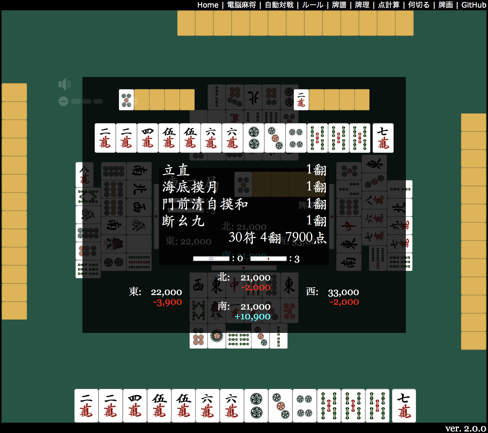
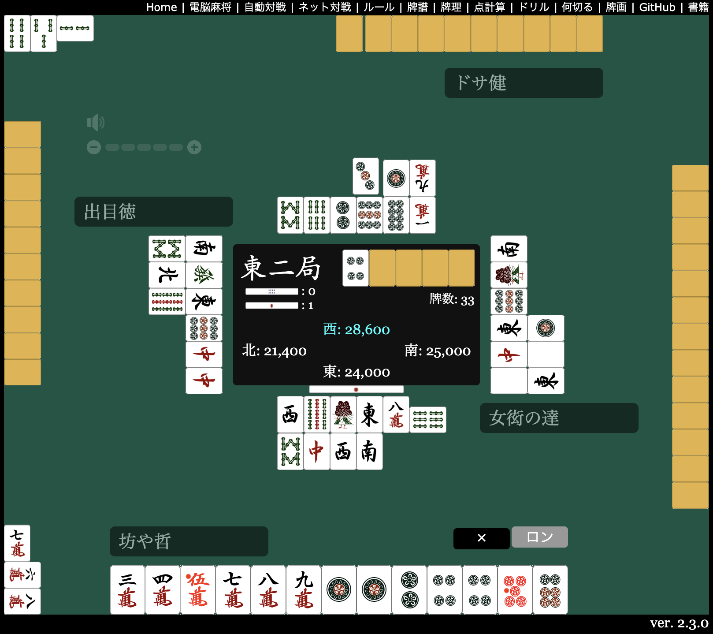

Main Table
For longer, quieter sessions
This one is not a five-minute reflex game. It feels better when you sit down for a few hands, read the table properly, and let the pace slow your brain down a bit.
Table Route
This is the long-session detour on the site. When quick fish shots stop sounding fun and you want something slower, denser, and more thoughtful, this is the page to open instead.
Main Entry
Heads up: the original app UI is mostly in Japanese, but the table layout, tiles, and drill pages are still very usable if you already know basic riichi flow.

Main Table
This one is not a five-minute reflex game. It feels better when you sit down for a few hands, read the table properly, and let the pace slow your brain down a bit.
Good Starting Point
If you just want to get a feel for the interface, autoplay is the least intimidating route. It is also good when you want to watch tile flow before making decisions yourself.
Important Note
The original project supports network play with a separate server package. This site keeps the standalone tools, drills, and local table routes instead.
Useful Routes
Watch
Good for learning the rhythm of draws, discards, and board reading without needing to click every decision yourself.

Study
A nice route when you want one concrete tile decision instead of a full table session.
Drill
Open this when you want to work on points, hand reading, and the stuff that usually gets fuzzy if you have not played in a while.
Player Note
Most of this site is built around quick arcade energy. Mahjong is the opposite kind of useful. It gives the whole place one route that is slower, more thoughtful, and more likely to turn into a half-hour session.
Open Source
This route is based on kobalab/Majiang, an MIT-licensed HTML5 mahjong project by Satoshi Kobayashi. Attribution is kept on the license page.